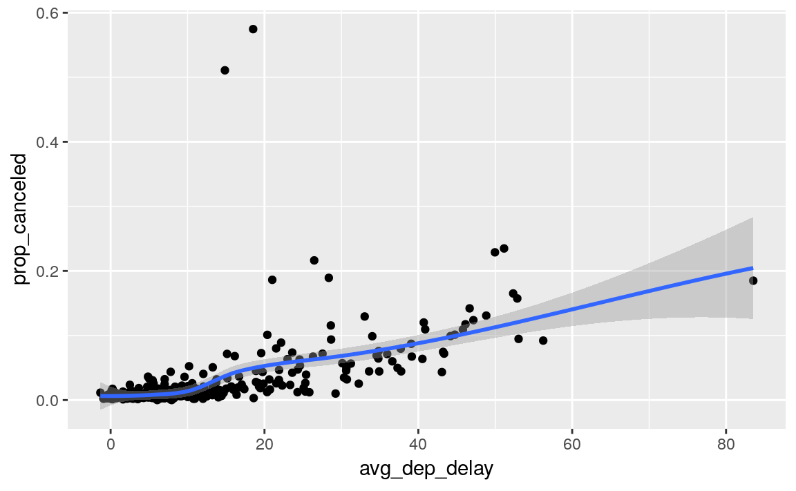
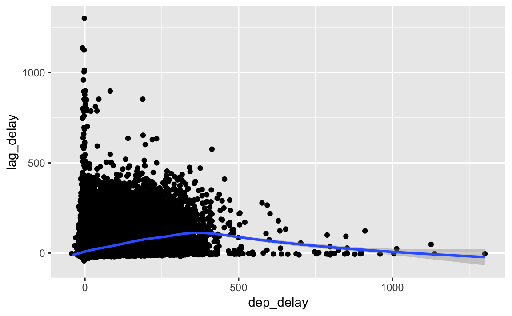

5 Data transformation
5.1 Introduction
5.2 Filter rows with filter()
Exercise 5.2.1
Find all flights that
- Had an arrival delay of two or more hours
- Flew to Houston (IAH or HOU)
- Were operated by United, American, or Delta
- Departed in summer (July, August, and September)
- Arrived more than two hours late, but didn’t leave late
- Were delayed by at least an hour, but made up over 30 minutes in flight
- Departed between midnight and 6am (inclusive)
The answer to each part follows.
Since delay is in minutes, find flights whose arrival was delayed 120 or more minutes.
filter(flights, arr_delay >= 120) #> # A tibble: 10,200 x 19 #> year month day dep_time sched_dep_time dep_delay arr_time #> <int> <int> <int> <int> <int> <dbl> <int> #> 1 2013 1 1 811 630 101 1047 #> 2 2013 1 1 848 1835 853 1001 #> 3 2013 1 1 957 733 144 1056 #> 4 2013 1 1 1114 900 134 1447 #> 5 2013 1 1 1505 1310 115 1638 #> 6 2013 1 1 1525 1340 105 1831 #> # ... with 1.019e+04 more rows, and 12 more variables: #> # sched_arr_time <int>, arr_delay <dbl>, carrier <chr>, flight <int>, #> # tailnum <chr>, origin <chr>, dest <chr>, air_time <dbl>, #> # distance <dbl>, hour <dbl>, minute <dbl>, time_hour <dttm>The flights that flew to Houston were:
filter(flights, dest %in% c("IAH", "HOU")) #> # A tibble: 9,313 x 19 #> year month day dep_time sched_dep_time dep_delay arr_time #> <int> <int> <int> <int> <int> <dbl> <int> #> 1 2013 1 1 517 515 2 830 #> 2 2013 1 1 533 529 4 850 #> 3 2013 1 1 623 627 -4 933 #> 4 2013 1 1 728 732 -4 1041 #> 5 2013 1 1 739 739 0 1104 #> 6 2013 1 1 908 908 0 1228 #> # ... with 9,307 more rows, and 12 more variables: sched_arr_time <int>, #> # arr_delay <dbl>, carrier <chr>, flight <int>, tailnum <chr>, #> # origin <chr>, dest <chr>, air_time <dbl>, distance <dbl>, hour <dbl>, #> # minute <dbl>, time_hour <dttm>In the
flightsdataset, the columncarrierindicates the airline, but it uses two-character carrier codes. We can find the carrier codes for the airlines in theairlinesdataset. Since the carrier code dataset only has 16 rows, and the names of the airlines in that dataset are not exactly “United”, “American”, or “Delta”, it is easiest to manually look up their carrier codes in that data.airlines #> # A tibble: 16 x 2 #> carrier name #> <chr> <chr> #> 1 9E Endeavor Air Inc. #> 2 AA American Airlines Inc. #> 3 AS Alaska Airlines Inc. #> 4 B6 JetBlue Airways #> 5 DL Delta Air Lines Inc. #> 6 EV ExpressJet Airlines Inc. #> # ... with 10 more rowsThe carrier code for Delta is
"DL", for American is"AA", and for United is"UA". Using these carriers codes, we check whethercarrieris one of those.filter(flights, carrier %in% c("AA", "DL", "UA")) #> # A tibble: 139,504 x 19 #> year month day dep_time sched_dep_time dep_delay arr_time #> <int> <int> <int> <int> <int> <dbl> <int> #> 1 2013 1 1 517 515 2 830 #> 2 2013 1 1 533 529 4 850 #> 3 2013 1 1 542 540 2 923 #> 4 2013 1 1 554 600 -6 812 #> 5 2013 1 1 554 558 -4 740 #> 6 2013 1 1 558 600 -2 753 #> # ... with 1.395e+05 more rows, and 12 more variables: #> # sched_arr_time <int>, arr_delay <dbl>, carrier <chr>, flight <int>, #> # tailnum <chr>, origin <chr>, dest <chr>, air_time <dbl>, #> # distance <dbl>, hour <dbl>, minute <dbl>, time_hour <dttm>The variable
monthhas the month, and it is numeric. So, the summer flights are those that departed in months 7 (July), 8 (August), and 9 (September).filter(flights, month >= 7, month <= 9) #> # A tibble: 86,326 x 19 #> year month day dep_time sched_dep_time dep_delay arr_time #> <int> <int> <int> <int> <int> <dbl> <int> #> 1 2013 7 1 1 2029 212 236 #> 2 2013 7 1 2 2359 3 344 #> 3 2013 7 1 29 2245 104 151 #> 4 2013 7 1 43 2130 193 322 #> 5 2013 7 1 44 2150 174 300 #> 6 2013 7 1 46 2051 235 304 #> # ... with 8.632e+04 more rows, and 12 more variables: #> # sched_arr_time <int>, arr_delay <dbl>, carrier <chr>, flight <int>, #> # tailnum <chr>, origin <chr>, dest <chr>, air_time <dbl>, #> # distance <dbl>, hour <dbl>, minute <dbl>, time_hour <dttm>Flights that arrived more than two hours late, but didn’t leave late will have an arrival delay of more than 120 minutes and either departed on time or left early.
filter(flights, dep_delay <= 0, arr_delay > 120) #> # A tibble: 29 x 19 #> year month day dep_time sched_dep_time dep_delay arr_time #> <int> <int> <int> <int> <int> <dbl> <int> #> 1 2013 1 27 1419 1420 -1 1754 #> 2 2013 10 7 1350 1350 0 1736 #> 3 2013 10 7 1357 1359 -2 1858 #> 4 2013 10 16 657 700 -3 1258 #> 5 2013 11 1 658 700 -2 1329 #> 6 2013 3 18 1844 1847 -3 39 #> # ... with 23 more rows, and 12 more variables: sched_arr_time <int>, #> # arr_delay <dbl>, carrier <chr>, flight <int>, tailnum <chr>, #> # origin <chr>, dest <chr>, air_time <dbl>, distance <dbl>, hour <dbl>, #> # minute <dbl>, time_hour <dttm>Were delayed by at least an hour, but made up over 30 minutes in flight
filter(flights, dep_delay >= 60, dep_delay - arr_delay > 30) #> # A tibble: 1,844 x 19 #> year month day dep_time sched_dep_time dep_delay arr_time #> <int> <int> <int> <int> <int> <dbl> <int> #> 1 2013 1 1 2205 1720 285 46 #> 2 2013 1 1 2326 2130 116 131 #> 3 2013 1 3 1503 1221 162 1803 #> 4 2013 1 3 1839 1700 99 2056 #> 5 2013 1 3 1850 1745 65 2148 #> 6 2013 1 3 1941 1759 102 2246 #> # ... with 1,838 more rows, and 12 more variables: sched_arr_time <int>, #> # arr_delay <dbl>, carrier <chr>, flight <int>, tailnum <chr>, #> # origin <chr>, dest <chr>, air_time <dbl>, distance <dbl>, hour <dbl>, #> # minute <dbl>, time_hour <dttm>Finding flights that departed between midnight and 6 am is complicated by the way in which times are represented in the
dep_timecolumn. Indep_time, midnight is2400, not0. Thus we cannot simply check thatdep_time < 600. Instead, we have to do this.filter(flights, dep_time <= 600 | dep_time == 2400) #> # A tibble: 9,373 x 19 #> year month day dep_time sched_dep_time dep_delay arr_time #> <int> <int> <int> <int> <int> <dbl> <int> #> 1 2013 1 1 517 515 2 830 #> 2 2013 1 1 533 529 4 850 #> 3 2013 1 1 542 540 2 923 #> 4 2013 1 1 544 545 -1 1004 #> 5 2013 1 1 554 600 -6 812 #> 6 2013 1 1 554 558 -4 740 #> # ... with 9,367 more rows, and 12 more variables: sched_arr_time <int>, #> # arr_delay <dbl>, carrier <chr>, flight <int>, tailnum <chr>, #> # origin <chr>, dest <chr>, air_time <dbl>, distance <dbl>, hour <dbl>, #> # minute <dbl>, time_hour <dttm>We could avoid using an “or” statement by using the modulo operator,
%%. The modulo operator returns the remainder of division. What happens if we calculatedep_timemod2400?Since
2400 %% 2400 == 0and all other times are left unchanged, we will only need to compare the result of the modulo operation to600,filter(flights, dep_time %% 2400 <= 600) #> # A tibble: 9,373 x 19 #> year month day dep_time sched_dep_time dep_delay arr_time #> <int> <int> <int> <int> <int> <dbl> <int> #> 1 2013 1 1 517 515 2 830 #> 2 2013 1 1 533 529 4 850 #> 3 2013 1 1 542 540 2 923 #> 4 2013 1 1 544 545 -1 1004 #> 5 2013 1 1 554 600 -6 812 #> 6 2013 1 1 554 558 -4 740 #> # ... with 9,367 more rows, and 12 more variables: sched_arr_time <int>, #> # arr_delay <dbl>, carrier <chr>, flight <int>, tailnum <chr>, #> # origin <chr>, dest <chr>, air_time <dbl>, distance <dbl>, hour <dbl>, #> # minute <dbl>, time_hour <dttm>This filter expression is more compact, but may or may not be more readable and intuitive to a reader.
Exercise 5.2.2
Another useful dplyr filtering helper is between(). What does it do? Can you use it to simplify the code needed to answer the previous challenges?
The expression between(x, left, right) is equivalent to x >= left & x <= right.
Of the answers in the previous question, we could simplify the statement of departed in summer (month >= 7 & month <= 9) using between() as the following
filter(flights, between(month, 7, 9))
#> # A tibble: 86,326 x 19
#> year month day dep_time sched_dep_time dep_delay arr_time
#> <int> <int> <int> <int> <int> <dbl> <int>
#> 1 2013 7 1 1 2029 212 236
#> 2 2013 7 1 2 2359 3 344
#> 3 2013 7 1 29 2245 104 151
#> 4 2013 7 1 43 2130 193 322
#> 5 2013 7 1 44 2150 174 300
#> 6 2013 7 1 46 2051 235 304
#> # ... with 8.632e+04 more rows, and 12 more variables:
#> # sched_arr_time <int>, arr_delay <dbl>, carrier <chr>, flight <int>,
#> # tailnum <chr>, origin <chr>, dest <chr>, air_time <dbl>,
#> # distance <dbl>, hour <dbl>, minute <dbl>, time_hour <dttm>Exercise 5.2.3
How many flights have a missing dep_time? What other variables are missing? What might these rows represent?
filter(flights, is.na(dep_time))
#> # A tibble: 8,255 x 19
#> year month day dep_time sched_dep_time dep_delay arr_time
#> <int> <int> <int> <int> <int> <dbl> <int>
#> 1 2013 1 1 NA 1630 NA NA
#> 2 2013 1 1 NA 1935 NA NA
#> 3 2013 1 1 NA 1500 NA NA
#> 4 2013 1 1 NA 600 NA NA
#> 5 2013 1 2 NA 1540 NA NA
#> 6 2013 1 2 NA 1620 NA NA
#> # ... with 8,249 more rows, and 12 more variables: sched_arr_time <int>,
#> # arr_delay <dbl>, carrier <chr>, flight <int>, tailnum <chr>,
#> # origin <chr>, dest <chr>, air_time <dbl>, distance <dbl>, hour <dbl>,
#> # minute <dbl>, time_hour <dttm>Since arr_time is also missing, these are canceled flights.
Exercise 5.2.4
Why is NA ^ 0 not missing? Why is NA | TRUE not missing?
Why is FALSE & NA not missing? Can you figure out the general rule?
(NA * 0 is a tricky counterexample!)
NA ^ 0 == 1 since for all numeric values \(x ^ 0 = 1\).
NA | TRUE is TRUE because the value of the missing TRUE or FALSE,
\(x\) or TRUE is TRUE for all values of \(x\).
Likewise, anything and FALSE is always FALSE.
Because the value of the missing element matters in NA | FALSE and NA & TRUE, these are missing:
Since \(x * 0 = 0\) for all finite, numeric \(x\), we might expect NA * 0 == 0, but that’s not the case.
The reason that NA * 0 is not equal to 0 is that \(x \times \infty\) and \(x \times -\infty\) is undefined.
R represents undefined results as NaN, which is an abbreviation of “not a number”.
5.3 Arrange rows with arrange()
Exercise 5.3.1
How could you use arrange() to sort all missing values to the start? (Hint: use is.na()).
This sorts by increasing dep_time, but with all missing values put first.
arrange(flights, desc(is.na(dep_time)), dep_time)
#> # A tibble: 336,776 x 19
#> year month day dep_time sched_dep_time dep_delay arr_time
#> <int> <int> <int> <int> <int> <dbl> <int>
#> 1 2013 1 1 NA 1630 NA NA
#> 2 2013 1 1 NA 1935 NA NA
#> 3 2013 1 1 NA 1500 NA NA
#> 4 2013 1 1 NA 600 NA NA
#> 5 2013 1 2 NA 1540 NA NA
#> 6 2013 1 2 NA 1620 NA NA
#> # ... with 3.368e+05 more rows, and 12 more variables:
#> # sched_arr_time <int>, arr_delay <dbl>, carrier <chr>, flight <int>,
#> # tailnum <chr>, origin <chr>, dest <chr>, air_time <dbl>,
#> # distance <dbl>, hour <dbl>, minute <dbl>, time_hour <dttm>Exercise 5.3.2
Sort flights to find the most delayed flights. Find the flights that left earliest.
The most delayed flights are found by sorting by dep_delay in descending order.
arrange(flights, desc(dep_delay))
#> # A tibble: 336,776 x 19
#> year month day dep_time sched_dep_time dep_delay arr_time
#> <int> <int> <int> <int> <int> <dbl> <int>
#> 1 2013 1 9 641 900 1301 1242
#> 2 2013 6 15 1432 1935 1137 1607
#> 3 2013 1 10 1121 1635 1126 1239
#> 4 2013 9 20 1139 1845 1014 1457
#> 5 2013 7 22 845 1600 1005 1044
#> 6 2013 4 10 1100 1900 960 1342
#> # ... with 3.368e+05 more rows, and 12 more variables:
#> # sched_arr_time <int>, arr_delay <dbl>, carrier <chr>, flight <int>,
#> # tailnum <chr>, origin <chr>, dest <chr>, air_time <dbl>,
#> # distance <dbl>, hour <dbl>, minute <dbl>, time_hour <dttm>If we sort dep_delay in ascending order, we get those that left earliest.
There was a flight that left 43 minutes early.
arrange(flights, dep_delay)
#> # A tibble: 336,776 x 19
#> year month day dep_time sched_dep_time dep_delay arr_time
#> <int> <int> <int> <int> <int> <dbl> <int>
#> 1 2013 12 7 2040 2123 -43 40
#> 2 2013 2 3 2022 2055 -33 2240
#> 3 2013 11 10 1408 1440 -32 1549
#> 4 2013 1 11 1900 1930 -30 2233
#> 5 2013 1 29 1703 1730 -27 1947
#> 6 2013 8 9 729 755 -26 1002
#> # ... with 3.368e+05 more rows, and 12 more variables:
#> # sched_arr_time <int>, arr_delay <dbl>, carrier <chr>, flight <int>,
#> # tailnum <chr>, origin <chr>, dest <chr>, air_time <dbl>,
#> # distance <dbl>, hour <dbl>, minute <dbl>, time_hour <dttm>Exercise 5.3.3
Sort flights to find the fastest flights.
Exercise 5.3.4
Which flights traveled the longest? Which traveled the shortest?
I’ll assume hat traveled the longest or shortest refers to distance, rather than air-time.
The longest flights are the Hawaii Air (HA 51) between JFK and HNL (Honolulu) at 4,983 miles.
arrange(flights, desc(distance))
#> # A tibble: 336,776 x 19
#> year month day dep_time sched_dep_time dep_delay arr_time
#> <int> <int> <int> <int> <int> <dbl> <int>
#> 1 2013 1 1 857 900 -3 1516
#> 2 2013 1 2 909 900 9 1525
#> 3 2013 1 3 914 900 14 1504
#> 4 2013 1 4 900 900 0 1516
#> 5 2013 1 5 858 900 -2 1519
#> 6 2013 1 6 1019 900 79 1558
#> # ... with 3.368e+05 more rows, and 12 more variables:
#> # sched_arr_time <int>, arr_delay <dbl>, carrier <chr>, flight <int>,
#> # tailnum <chr>, origin <chr>, dest <chr>, air_time <dbl>,
#> # distance <dbl>, hour <dbl>, minute <dbl>, time_hour <dttm>Apart from an EWR to LGA flight that was canceled, the shortest flights are the Envoy Air Flights between EWR and PHL at 80 miles.
arrange(flights, distance)
#> # A tibble: 336,776 x 19
#> year month day dep_time sched_dep_time dep_delay arr_time
#> <int> <int> <int> <int> <int> <dbl> <int>
#> 1 2013 7 27 NA 106 NA NA
#> 2 2013 1 3 2127 2129 -2 2222
#> 3 2013 1 4 1240 1200 40 1333
#> 4 2013 1 4 1829 1615 134 1937
#> 5 2013 1 4 2128 2129 -1 2218
#> 6 2013 1 5 1155 1200 -5 1241
#> # ... with 3.368e+05 more rows, and 12 more variables:
#> # sched_arr_time <int>, arr_delay <dbl>, carrier <chr>, flight <int>,
#> # tailnum <chr>, origin <chr>, dest <chr>, air_time <dbl>,
#> # distance <dbl>, hour <dbl>, minute <dbl>, time_hour <dttm>5.4 Select columns with select()
Exercise 5.4.1
Brainstorm as many ways as possible to select dep_time, dep_delay, arr_time, and arr_delay from flights.
A few ways include:
select(flights, dep_time, dep_delay, arr_time, arr_delay)
#> # A tibble: 336,776 x 4
#> dep_time dep_delay arr_time arr_delay
#> <int> <dbl> <int> <dbl>
#> 1 517 2 830 11
#> 2 533 4 850 20
#> 3 542 2 923 33
#> 4 544 -1 1004 -18
#> 5 554 -6 812 -25
#> 6 554 -4 740 12
#> # ... with 3.368e+05 more rows
select(flights, starts_with("dep_"), starts_with("arr_"))
#> # A tibble: 336,776 x 4
#> dep_time dep_delay arr_time arr_delay
#> <int> <dbl> <int> <dbl>
#> 1 517 2 830 11
#> 2 533 4 850 20
#> 3 542 2 923 33
#> 4 544 -1 1004 -18
#> 5 554 -6 812 -25
#> 6 554 -4 740 12
#> # ... with 3.368e+05 more rows
select(flights, matches("^(dep|arr)_(time|delay)$"))
#> # A tibble: 336,776 x 4
#> dep_time dep_delay arr_time arr_delay
#> <int> <dbl> <int> <dbl>
#> 1 517 2 830 11
#> 2 533 4 850 20
#> 3 542 2 923 33
#> 4 544 -1 1004 -18
#> 5 554 -6 812 -25
#> 6 554 -4 740 12
#> # ... with 3.368e+05 more rowsusing ends_with() doesn’t work well since it would return both sched_arr_time and sched_dep_time.
Exercise 5.4.2
What happens if you include the name of a variable multiple times in a select() call?
It ignores the duplicates, and that variable is only included once. No error, warning, or message is emitted.
Exercise 5.4.3
What does the one_of() function do? Why might it be helpful in conjunction with this vector?
The one_of() function select variables using a character vector rather than as unquoted variable names.
This function is useful because it is easier to programmatically generate character vectors with variable names than to generate unquoted variable names, which are easier to type.
vars <- c("year", "month", "day", "dep_delay", "arr_delay")
select(flights, one_of(vars))
#> # A tibble: 336,776 x 5
#> year month day dep_delay arr_delay
#> <int> <int> <int> <dbl> <dbl>
#> 1 2013 1 1 2 11
#> 2 2013 1 1 4 20
#> 3 2013 1 1 2 33
#> 4 2013 1 1 -1 -18
#> 5 2013 1 1 -6 -25
#> 6 2013 1 1 -4 12
#> # ... with 3.368e+05 more rowsExercise 5.4.4
Does the result of running the following code surprise you? How do the select helpers deal with case by default? How can you change that default?
select(flights, contains("TIME"))
#> # A tibble: 336,776 x 6
#> dep_time sched_dep_time arr_time sched_arr_time air_time
#> <int> <int> <int> <int> <dbl>
#> 1 517 515 830 819 227
#> 2 533 529 850 830 227
#> 3 542 540 923 850 160
#> 4 544 545 1004 1022 183
#> 5 554 600 812 837 116
#> 6 554 558 740 728 150
#> # ... with 3.368e+05 more rows, and 1 more variable: time_hour <dttm>The default behavior for contains is to ignore case.
It may or may not surprise you.
One reason for this behavior is that most users expect searching to be case insensitive by default, so it is a useful default.
A second, technical, reason is that dplyr works with more than R data frames.
It can also work with a variety of databases.
Some of these database engines have case insensitive column names, so making functions that match variable names
case insensitive by default will make the behavior of
select() consistent regardless of whether the table is
stored as an R data frame or in a database.
To change the behavior add the argument ignore.case = FALSE.
Now this expression selects not variables from the table.
5.5 Add new variables with mutate()
Exercise 5.5.1
Currently dep_time and sched_dep_time are convenient to look at, but hard to compute with because they’re not really continuous numbers. Convert them to a more convenient representation of number of minutes since midnight.
To get the departure times in the number of minutes, (integer) divide dep_time by 100 to get the hours since midnight and multiply by 60 and add the remainder of dep_time divided by 100.
mutate(flights,
dep_time_mins = dep_time %/% 100 * 60 + dep_time %% 100,
sched_dep_time_mins = sched_dep_time %/% 100 * 60 + sched_dep_time %% 100) %>%
select(dep_time, dep_time_mins, sched_dep_time, sched_dep_time_mins)
#> # A tibble: 336,776 x 4
#> dep_time dep_time_mins sched_dep_time sched_dep_time_mins
#> <int> <dbl> <int> <dbl>
#> 1 517 317 515 315
#> 2 533 333 529 329
#> 3 542 342 540 340
#> 4 544 344 545 345
#> 5 554 354 600 360
#> 6 554 354 558 358
#> # ... with 3.368e+05 more rowsThis would be more cleanly done by first defining a function and reusing that:
time2mins <- function(x) {
x %/% 100 * 60 + x %% 100
}
mutate(flights,
dep_time_mins = time2mins(dep_time),
sched_dep_time_mins = time2mins(sched_dep_time)) %>%
select(dep_time, dep_time_mins, sched_dep_time, sched_dep_time_mins)
#> # A tibble: 336,776 x 4
#> dep_time dep_time_mins sched_dep_time sched_dep_time_mins
#> <int> <dbl> <int> <dbl>
#> 1 517 317 515 315
#> 2 533 333 529 329
#> 3 542 342 540 340
#> 4 544 344 545 345
#> 5 554 354 600 360
#> 6 554 354 558 358
#> # ... with 3.368e+05 more rowsExercise 5.5.2
Compare air_time with arr_time - dep_time. What do you expect to see? What do you see? What do you need to do to fix it?
As with the previous question, we will need to
Since arr_time and dep_time may be in different time zones, the air_time does not equal the differences.
air_times <- mutate(flights,
arr_time_min = arr_time %/% 100 * 60 + arr_time %% 100,
dep_time_min = dep_time %/% 100 * 60 + dep_time %% 100,
air_time_2 = (arr_time_min - dep_time_min + 1440) %% 1440,
air_time_diff = air_time_2 - air_time)
air_times %>%
arrange(desc(abs(air_time_diff))) %>%
select(air_time_diff)
#> # A tibble: 336,776 x 1
#> air_time_diff
#> <dbl>
#> 1 -345
#> 2 -345
#> 3 -345
#> 4 -345
#> 5 -344
#> 6 -344
#> # ... with 3.368e+05 more rowsExercise 5.5.3
Compare dep_time, sched_dep_time, and dep_delay. How would you expect those three numbers to be related?
I would expect dep_time, sched_dep_time, and dep_delay to be related by the
equation dep_time - sched_dep_time = dep_delay.
mutate(flights,
dep_delay2 = time2mins(dep_time) - time2mins(sched_dep_time)) %>%
filter(dep_delay2 != dep_delay) %>%
select(dep_time, sched_dep_time, dep_delay, dep_delay2)
#> # A tibble: 1,207 x 4
#> dep_time sched_dep_time dep_delay dep_delay2
#> <int> <int> <dbl> <dbl>
#> 1 848 1835 853 -587
#> 2 42 2359 43 -1397
#> 3 126 2250 156 -1284
#> 4 32 2359 33 -1407
#> 5 50 2145 185 -1255
#> 6 235 2359 156 -1284
#> # ... with 1,201 more rowsThis uses the time2mins() function from a previous exercise.
That solved most discrepancies, but there are still some non matches because we have not accounted for the cases in which the departure time is the next day from the scheduled departure time.
Exercise 5.5.4
Find the 10 most delayed flights using a ranking function. How do you want to handle ties? Carefully read the documentation for min_rank().
I’d want to handle ties by taking the minimum of tied values. If three flights have the same value and are the most delayed, we would say they are tied for first, not tied for third or second.
mutate(flights,
dep_delay_rank = min_rank(-dep_delay)) %>%
arrange(dep_delay_rank) %>%
filter(dep_delay_rank <= 10)
#> # A tibble: 10 x 20
#> year month day dep_time sched_dep_time dep_delay arr_time
#> <int> <int> <int> <int> <int> <dbl> <int>
#> 1 2013 1 9 641 900 1301 1242
#> 2 2013 6 15 1432 1935 1137 1607
#> 3 2013 1 10 1121 1635 1126 1239
#> 4 2013 9 20 1139 1845 1014 1457
#> 5 2013 7 22 845 1600 1005 1044
#> 6 2013 4 10 1100 1900 960 1342
#> # ... with 4 more rows, and 13 more variables: sched_arr_time <int>,
#> # arr_delay <dbl>, carrier <chr>, flight <int>, tailnum <chr>,
#> # origin <chr>, dest <chr>, air_time <dbl>, distance <dbl>, hour <dbl>,
#> # minute <dbl>, time_hour <dttm>, dep_delay_rank <int>Exercise 5.5.5
What does 1:3 + 1:10 return? Why?
It returns c(1 + 1, 2 + 2, 3 + 3, 1 + 4, 2 + 5, 3 + 6, 1 + 7, 2 + 8, 3 + 9, 1 + 10).
When adding two vectors recycles the shorter vector’s values to get vectors of the same length.
We get a warning vector since the shorter vector is not a multiple of the longer one (this often, but not necessarily, means we made an error somewhere).
Exercise 5.5.6
What trigonometric functions does R provide?
These are all described in the same help page,
Cosine (cos()), sine (sin()), tangent (tan()) are provided:
tibble(
x = seq(-3, 7, by = 1 / 2),
cosx = cos(pi * x),
sinx = cos(pi * x),
tanx = tan(pi * x)
)
#> # A tibble: 21 x 4
#> x cosx sinx tanx
#> <dbl> <dbl> <dbl> <dbl>
#> 1 -3 -1.00e+ 0 -1.00e+ 0 3.67e-16
#> 2 -2.5 3.06e-16 3.06e-16 -3.27e+15
#> 3 -2 1.00e+ 0 1.00e+ 0 2.45e-16
#> 4 -1.5 -1.84e-16 -1.84e-16 -5.44e+15
#> 5 -1 -1.00e+ 0 -1.00e+ 0 1.22e-16
#> 6 -0.5 6.12e-17 6.12e-17 -1.63e+16
#> # ... with 15 more rowsThe convenience function cospi(x) is equivalent to cos(pi * x), with sinpi() and tanpi() similarly defined,
tibble(
x = seq(-3, 7, by = 1 / 2),
cosx = cospi(x),
sinx = cos(x),
tanx = tan(x)
)
#> # A tibble: 21 x 4
#> x cosx sinx tanx
#> <dbl> <dbl> <dbl> <dbl>
#> 1 -3 -1 -0.990 0.143
#> 2 -2.5 0 -0.801 0.747
#> 3 -2 1 -0.416 2.19
#> 4 -1.5 0 0.0707 -14.1
#> 5 -1 -1 0.540 -1.56
#> 6 -0.5 0 0.878 -0.546
#> # ... with 15 more rowsThe inverse function arc-cosine (acos()), arc-sine (asin()), and arc-tangent (atan()) are provided,
tibble(
x = seq(-1, 1, by = 1 / 4),
acosx = acos(x),
asinx = asin(x),
atanx = atan(x)
)
#> # A tibble: 9 x 4
#> x acosx asinx atanx
#> <dbl> <dbl> <dbl> <dbl>
#> 1 -1 3.14 -1.57 -0.785
#> 2 -0.75 2.42 -0.848 -0.644
#> 3 -0.5 2.09 -0.524 -0.464
#> 4 -0.25 1.82 -0.253 -0.245
#> 5 0 1.57 0 0
#> 6 0.25 1.32 0.253 0.245
#> # ... with 3 more rowsThe function atan2() is the angle between the x-axis and the the vector (0,0) to (x, y).
5.6 Grouped summaries with summarise()
Exercise 5.6.1
Brainstorm at least 5 different ways to assess the typical delay characteristics of a group of flights. Consider the following scenarios:
- A flight is 15 minutes early 50% of the time, and 15 minutes late 50% of the time.
- A flight is always 10 minutes late.
- A flight is 30 minutes early 50% of the time, and 30 minutes late 50% of the time.
- 99% of the time a flight is on time. 1% of the time it’s 2 hours late.
Which is more important: arrival delay or departure delay?
What this question gets at is a fundamental question of data analysis: the cost function. As analysts, the reason we are interested in flight delay because it is costly to passengers. But it is worth thinking carefully about how it is costly and use that information in ranking and measuring these scenarios.
In many scenarios, arrival delay is more important.
Presumably being late on arriving is more costly to the passenger since it could disrupt the next stages of their travel, such as connecting flights or meetings.
If the departure is delayed without affecting the arrival time and the passenger arrived at the same time, this delay will not affect future plans nor does it affect the total time spent traveling.
The delay could be a positive, if less time is spent on the airplane itself, or a negative, if that extra time is spent on the plane in the runway.
Variation in arrival time is worse than consistency. If a flight is always 30 minutes late and that delay is know, then it is as if the arrival time is that delayed time. The traveler could easily plan for this. If the delay of the flight is more variable, then it is harder for the traveler to plan for it.
TODO (Add a better explanation and some examples)
Exercise 5.6.2
Come up with another approach that will give you the same output as not_canceled %>% count(dest) and not_canceled %>% count(tailnum, wt = distance) (without using count()).
The data frame not_canceled is defined in the chapter as,
Count will group a dataset on the given variable and then determine the number of instances within each group.
This can be done by by first grouping by the given variable, and then finding the number of observations in each group.
The number of observations in each group can be found by calling the length() function on any variable.
To make the result match count(), the value should go in a new column n.
not_canceled %>%
group_by(dest) %>%
summarise(n = length(dest))
#> # A tibble: 104 x 2
#> dest n
#> <chr> <int>
#> 1 ABQ 254
#> 2 ACK 264
#> 3 ALB 418
#> 4 ANC 8
#> 5 ATL 16837
#> 6 AUS 2411
#> # ... with 98 more rowsA more concise way to get the number of observations in a data frame, or a group, is the function n(),
not_canceled %>%
group_by(dest) %>%
summarise(n = n())
#> # A tibble: 104 x 2
#> dest n
#> <chr> <int>
#> 1 ABQ 254
#> 2 ACK 264
#> 3 ALB 418
#> 4 ANC 8
#> 5 ATL 16837
#> 6 AUS 2411
#> # ... with 98 more rowsFor a weighted count, take the sum of the weight variable in each group.
not_canceled %>%
group_by(tailnum) %>%
summarise(n = sum(distance))
#> # A tibble: 4,037 x 2
#> tailnum n
#> <chr> <dbl>
#> 1 D942DN 3418
#> 2 N0EGMQ 239143
#> 3 N10156 109664
#> 4 N102UW 25722
#> 5 N103US 24619
#> 6 N104UW 24616
#> # ... with 4,031 more rowsAlternatively, we could have used group_by() followed by tally(),
since count() itself is a shortcut for calling group_by() then tally(),
not_canceled %>%
group_by(tailnum) %>%
tally()
#> # A tibble: 4,037 x 2
#> tailnum n
#> <chr> <int>
#> 1 D942DN 4
#> 2 N0EGMQ 352
#> 3 N10156 145
#> 4 N102UW 48
#> 5 N103US 46
#> 6 N104UW 46
#> # ... with 4,031 more rowsand
Exercise 5.6.3
Our definition of canceled flights (is.na(dep_delay) | is.na(arr_delay)) is slightly suboptimal. Why? Which is the most important column?
If a flight never departs, then it won’t arrive. A flight could also depart and not arrive if it crashes, or if it is redirected and lands in an airport other than its intended destination.
The more important column is arr_delay, which indicates the amount of delay in arrival.
filter(flights, !is.na(dep_delay), is.na(arr_delay)) %>%
select(dep_time, arr_time, sched_arr_time, dep_delay, arr_delay)
#> # A tibble: 1,175 x 5
#> dep_time arr_time sched_arr_time dep_delay arr_delay
#> <int> <int> <int> <dbl> <dbl>
#> 1 1525 1934 1805 -5 NA
#> 2 1528 2002 1647 29 NA
#> 3 1740 2158 2020 -5 NA
#> 4 1807 2251 2103 29 NA
#> 5 1939 29 2151 59 NA
#> 6 1952 2358 2207 22 NA
#> # ... with 1,169 more rowsOkay, I’m not sure what’s going on in this data. dep_time can be non-missing and arr_delay missing but arr_time not missing.
They may be combining different flights?
Exercise 5.6.4
Look at the number of canceled flights per day. Is there a pattern? Is the proportion of canceled flights related to the average delay?
canceled_delayed <-
flights %>%
mutate(canceled = (is.na(arr_delay) | is.na(dep_delay))) %>%
group_by(year, month, day) %>%
summarise(prop_canceled = mean(canceled),
avg_dep_delay = mean(dep_delay, na.rm = TRUE))
ggplot(canceled_delayed, aes(x = avg_dep_delay, prop_canceled)) +
geom_point() +
geom_smooth()
#> `geom_smooth()` using method = 'loess' and formula 'y ~ x'
Exercise 5.6.5
Which carrier has the worst delays? Challenge: can you disentangle the effects of bad airports vs. bad carriers? Why/why not? (Hint: think about flights %>% group_by(carrier, dest) %>% summarise(n()))
flights %>%
group_by(carrier) %>%
summarise(arr_delay = mean(arr_delay, na.rm = TRUE)) %>%
arrange(desc(arr_delay))
#> # A tibble: 16 x 2
#> carrier arr_delay
#> <chr> <dbl>
#> 1 F9 21.9
#> 2 FL 20.1
#> 3 EV 15.8
#> 4 YV 15.6
#> 5 OO 11.9
#> 6 MQ 10.8
#> # ... with 10 more rowsWhat airline corresponds to the "F9" carrier code?
filter(airlines, carrier == "F9")
#> # A tibble: 1 x 2
#> carrier name
#> <chr> <chr>
#> 1 F9 Frontier Airlines Inc.You can get part of the way to disentangling the effects of airports vs. carriers by comparing each flight’s delay to the average delay of destination airport. However, you’d really want to compare it to the average delay of the destination airport, after removing other flights from the same airline.
FiveThirtyEight conducted a similar analysis.
Exercise 5.6.6
What does the sort argument to count() do. When might you use it?
The sort argument to count() sorts the results in order of n.
You could use this anytime you would run count() followed by arrange().
5.7 Grouped mutates (and filters)
Exercise 5.7.1
Refer back to the table of useful mutate and filtering functions. Describe how each operation changes when you combine it with grouping.
They operate within each group rather than over the entire data frame. E.g. mean will calculate the mean within each group.
Exercise 5.7.2
Which plane (tailnum) has the worst on-time record?
The question does not define the on-time record. I will use the proportion of flights not delayed or canceled. This metric does not differentiate between the amount of delay, but has the benefit of easily incorporating canceled flights.
flights %>%
# unknown why flights have sched_arr_time, arr_time but missing arr_delay.
filter(!is.na(arr_delay)) %>%
mutate(canceled = is.na(arr_time),
late = !canceled & arr_delay > 0) %>%
group_by(tailnum) %>%
summarise(on_time = mean(!late)) %>%
filter(min_rank(on_time) <= 1)
#> # A tibble: 104 x 2
#> tailnum on_time
#> <chr> <dbl>
#> 1 N121DE 0
#> 2 N136DL 0
#> 3 N143DA 0
#> 4 N17627 0
#> 5 N240AT 0
#> 6 N26906 0
#> # ... with 98 more rowsHowever, there are many planes that have never flown an on-time flight.
Another alternative is to rank planes by the mean of minutes delayed.
Exercise 5.7.3
What time of day should you fly if you want to avoid delays as much as possible?
Let’s group by hour. The earlier the better to fly. This is intuitive as delays early in the morning are likely to propagate throughout the day.
Exercise 5.7.4
For each destination, compute the total minutes of delay. For each flight, compute the proportion of the total delay for its destination.
flights %>%
filter(!is.na(arr_delay), arr_delay > 0) %>%
group_by(dest) %>%
mutate(arr_delay_total = sum(arr_delay),
arr_delay_prop = arr_delay / arr_delay_total)
#> # A tibble: 133,004 x 21
#> # Groups: dest [103]
#> year month day dep_time sched_dep_time dep_delay arr_time
#> <int> <int> <int> <int> <int> <dbl> <int>
#> 1 2013 1 1 517 515 2 830
#> 2 2013 1 1 533 529 4 850
#> 3 2013 1 1 542 540 2 923
#> 4 2013 1 1 554 558 -4 740
#> 5 2013 1 1 555 600 -5 913
#> 6 2013 1 1 558 600 -2 753
#> # ... with 1.33e+05 more rows, and 14 more variables:
#> # sched_arr_time <int>, arr_delay <dbl>, carrier <chr>, flight <int>,
#> # tailnum <chr>, origin <chr>, dest <chr>, air_time <dbl>,
#> # distance <dbl>, hour <dbl>, minute <dbl>, time_hour <dttm>,
#> # arr_delay_total <dbl>, arr_delay_prop <dbl>The key to answering this question is when calculating the total delay and proportion of delay we only consider only delayed flights, and ignore on-time or early flights.
Exercise 5.7.5
Delays are typically temporally correlated: even once the problem that caused the initial delay has been resolved, later flights are delayed to allow earlier flights to leave. Using lag() explore how the delay of a flight is related to the delay of the immediately preceding flight.
This calculates the departure delay of the preceding flight from the same airport.
lagged_delays <- flights %>%
arrange(origin, year, month, day, dep_time) %>%
group_by(origin) %>%
mutate(dep_delay_lag = lag(dep_delay)) %>%
filter(!is.na(dep_delay), !is.na(dep_delay_lag))This plots the relationship between the mean delay of a flight for all values of the previous flight.
lagged_delays %>%
group_by(dep_delay_lag) %>%
summarise(dep_delay_mean = mean(dep_delay)) %>%
ggplot(aes(y = dep_delay_mean, x = dep_delay_lag)) +
geom_point() +
geom_smooth() +
labs(y = "Departure Delay", x = "Previous Departure Delay")
We can summarize this relationship by the average difference in delays:
Exercise 5.7.6
Look at each destination. Can you find flights that are suspiciously fast? (i.e. flights that represent a potential data entry error). Compute the air time of a flight relative to the shortest flight to that destination. Which flights were most delayed in the air?
When calculating this answer we should only compare flights within the same origin, destination pair.
A common approach to finding unusual observations would be to calculate the z-score of observations each flight.
flights_with_zscore <- flights %>%
filter(!is.na(air_time)) %>%
group_by(dest, origin) %>%
mutate(air_time_mean = mean(air_time),
air_time_sd = sd(air_time),
n = n()) %>%
ungroup() %>%
mutate(z_score = (air_time - air_time_mean) / air_time_sd)Possible unusual flights are the Lets print out the 10 flights with the largest
flights_with_zscore %>%
arrange(desc(abs(z_score))) %>%
select() %>%
print(n = 15)
#> # A tibble: 327,346 x 0Now that we’ve identified potentially bad observations, we would to distinguish between the real problems and
One potential issue with the way that we calculated z-scores is that the mean and standard deviation used to calculate it include the unusual observations that we are looking for. Since the mean and standard deviation are sensitive to outliers, that means that an outlier could affect the mean and standard deviation calculations enough that it does not look like one. We would want to calculate the z-score of each observation using the mean and standard deviation based on all other flights to that origin and destination. This will be more of an issue if the number of of observations is small. Thankfully, there are easy methods to update the mean and variance by removing an observation, but for now, we won’t use them.2
Another way to improve this calculation is to use the same method
used in box plots (see geom_boxplot()) to screen outliers.
That method uses the median and inter-quartile range, and thus is less sensitive to outliers.
Adjust the previous code and see if it makes a difference.
All of these answers have relied on the distribution of comparable observations (flights from the same origin to the same destination) to flag unusual observations. Apart from our knowledge that flights from the same origin to the same destination should have similar air times, we have not used any domain specific knowledge. But actually know much more about this problem. We know that aircraft have maximum speeds. So could use the time and distance of each flight to calculate the average speed of each flight and find any clearly impossibly fast flights.
Exercise 5.7.7
Find all destinations that are flown by at least two carriers. Use that information to rank the carriers.
To restate this question, we are asked to rank airlines by the number of destinations that they fly to, considering only those airports that are flown to by two or more airlines.
We will calculate this ranking in two parts. First, find all airports serviced by two or more carriers.
dest_2carriers <- flights %>%
# keep only unique carrier,dest pairs
select(dest, carrier) %>%
group_by(dest, carrier) %>%
filter(row_number() == 1) %>%
# count carriers by destination
group_by(dest) %>%
mutate(n_carrier = n_distinct(carrier)) %>%
filter(n_carrier >= 2)Second, rank carriers by the number of these destinations that they service.
carriers_by_dest <- dest_2carriers %>%
group_by(carrier) %>%
summarise(n_dest = n()) %>%
arrange(desc(n_dest))
head(carriers_by_dest)
#> # A tibble: 6 x 2
#> carrier n_dest
#> <chr> <int>
#> 1 EV 51
#> 2 9E 48
#> 3 UA 42
#> 4 DL 39
#> 5 B6 35
#> 6 AA 19The carrier "EV" flies to the most destinations , considering only airports flown to by two or more carriers.
What is airline does the "EV" carrier code correspond to?
filter(airlines, carrier == "EV")
#> # A tibble: 1 x 2
#> carrier name
#> <chr> <chr>
#> 1 EV ExpressJet Airlines Inc.Unless you know the airplane industry, it is likely that you don’t recognize ExpressJet; I certainly didn’t. It is a regional airline that partners with major airlines to fly from hubs (larger airports) to smaller airports. This means that many of the shorter flights of major carriers are actually operated by ExpressJet. This business model explains why ExpressJet services the most destinations.
Exercise 5.7.8
For each plane, count the number of flights before the first delay of greater than 1 hour.
flights %>%
arrange(tailnum, year, month, day) %>%
group_by(tailnum) %>%
mutate(delay_gt1hr = dep_delay > 60) %>%
mutate(before_delay = cumsum(delay_gt1hr)) %>%
filter(before_delay < 1) %>%
count(sort = TRUE)
#> # A tibble: 3,755 x 2
#> # Groups: tailnum [3,755]
#> tailnum n
#> <chr> <int>
#> 1 N954UW 206
#> 2 N952UW 163
#> 3 N957UW 142
#> 4 N5FAAA 117
#> 5 N38727 99
#> 6 N3742C 98
#> # ... with 3,749 more rowsIn most interesting data analysis questions, no answer ever “right”. With infinite time and money, an analysis could almost always improve their answer with more data or better methods. The difficulty in real life is finding the quickest, simplest method that works “good enough”.↩